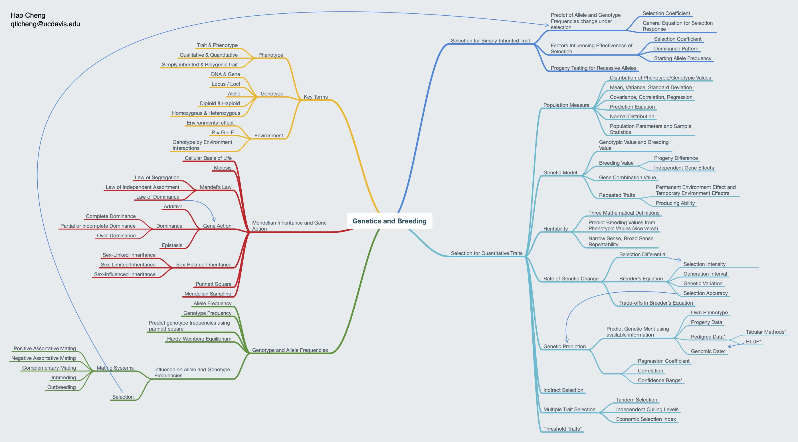
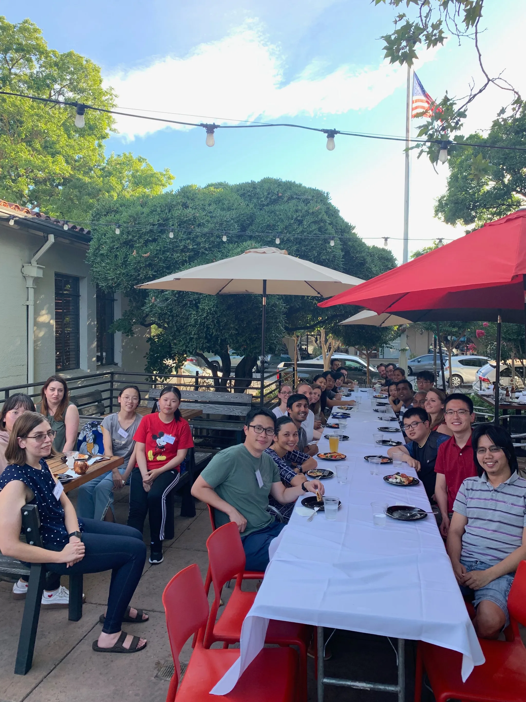

Teaching
Current Courses
Animal Genetics (ANG107)
Principles of quantitative genetics applied to genetic improvement of animal populations
Animal Data Science (ANS128)
This course provides an introduction to modern data science skills essential for problem-solving, data analysis, and communication. Designed for animal science students with limited programming, scripting, or data analytics experience, the course emphasizes hands-on learning and practical applications. By the end of the course, students will:
- Develop foundational knowledge of basic statistical concepts and methods
- Gain experience in data wrangling and visualization techniques
- Learn the fundamentals of machine learning
- Understand how to design and implement programs for data analysis
- Apply data science concepts to solve real-world problems in animal science
Short Courses and Workshops
Modern Programming in Genome to Phenome
Learn to code for genomic prediction from scratch. The following topics are covered:
- Mixed effects models with polygenic, maternal and permanent environment effects
- Use of pedigree information
- Iterative methods for solving linear systems, e.g, Jocobi, Gauss–Seidel
- GBLUP and Bayesian alphabet
- Variance component estimation
- Single-step methods
The workshop provides an introduction to programming and how to use it to code algorithms listed above from scratch. The course consists of lectures and practical components with hands-on exercises.